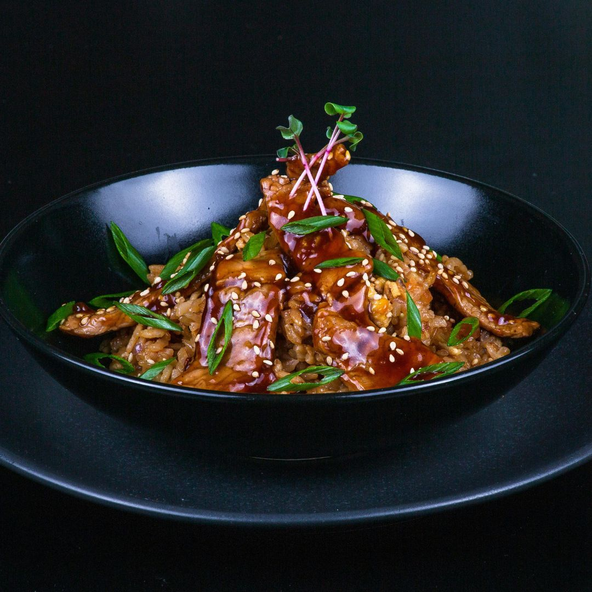
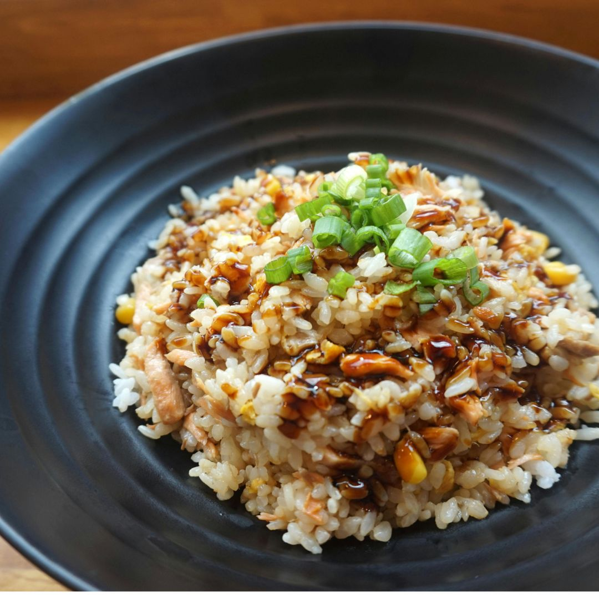

Chicken Teriyaki
Bahan-bahan:
- 500 gram ayam fillet
- 4 sdm saus teriyaki
- 2 sdm minyak sayur
- 1 sdm kecap asin
- 1 sdt jahe parut
- 1 sdt bawang putih parut
- Bijan untuk taburan (opsional)
Cara Membuat:
- Potong ayam fillet menjadi potongan kecil.
-
Campurkan saus teriyaki, kecap asin, jahe, dan bawang putih dalam
mangkuk.
- Marinasi potongan ayam dengan campuran saus selama 30 menit.
- Panaskan minyak sayur dalam wajan di atas api sedang.
-
Masak ayam marinasi hingga matang dan kecokelatan, sekitar 5-7
menit.
- Sajikan dengan taburan bijan jika suka.

Nasi Goreng Spesial
Bahan-bahan:
- 2 piring nasi dingin (lebih baik jika nasi semalam)
- 2 sdm minyak sayur
- 2 butir telur, kocok lepas
- 150 gram ayam fillet, potong kecil
- 2 siung bawang putih, cincang halus
- 2 batang daun bawang, iris halus
- 3 sdm kecap manis
- Garam dan merica secukupnya
- Kerupuk dan irisan mentimun untuk pelengkap
Cara Membuat:
-
Panaskan minyak sayur dalam wajan, kemudian tumis bawang putih
hingga harum.
- Masukkan ayam dan masak hingga berubah warna.
-
Geser ayam ke pinggir wajan, lalu tuang telur kocok dan orak-arik
hingga matang.
-
Tambahkan nasi dingin, daun bawang, kecap manis, garam, dan merica.
Aduk hingga semua bahan tercampur rata.
- Masak selama 5-7 menit hingga nasi panas dan bumbu meresap.
- Sajikan nasi goreng dengan kerupuk dan irisan mentimun.
Nugget Ayam Spesial
Bahan-bahan:
- 500 gram daging ayam fillet, giling halus
- 2 sdm tepung terigu
- 2 sdm tepung panir (breadcrumbs)
- 1 butir telur
- 1 sdt bawang putih bubuk
- 1 sdt garam
- 1/2 sdt merica bubuk
- Minyak untuk menggoreng
Cara Membuat:
-
Campurkan daging ayam giling, tepung terigu, telur, bawang putih
bubuk, garam, dan merica dalam mangkuk besar. Aduk rata hingga semua
bahan tercampur.
-
Ambil adonan dan bentuk menjadi nugget sesuai ukuran yang
diinginkan.
-
Gulingkan nugget yang telah dibentuk ke dalam tepung panir hingga
seluruh permukaan tertutup.
-
Panaskan minyak dalam wajan, kemudian goreng nugget hingga berwarna
keemasan dan matang, sekitar 5-7 menit.
-
Angkat dan tiriskan. Sajikan nugget ayam dengan saus sambal atau
saus tomat sesuai selera.